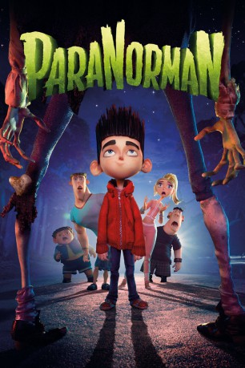

 
 IMDB-Wertung: 7.0 / 10
IMDB-Wertung: 7.0 / 10  Metascore:
Metascore: 
Norman ist krasser Außenseiter in seiner Schule in der neuenglischen Kleinstadt Blithe Hollow, in deren Geschichte eine Hexe die berühmteste Persönlichkeit ist. Nur der dicke Neill, der genauso gehänselt wird wie Norman, will sein Freund sein. Selbst Normans Vater hält ihn für nicht ganz normal. Denn Norman ist nicht nur ein fanatischer Horror-Fan, sondern er sieht Tote und spricht mit ihnen. Als die puritanischen Gründungsväter sich aus ihren Gräbern erheben und der Zorn der Hexe wiedererwacht ist es genau diese besondere Gabe, die Norman zum Helden macht.
Jahr: 2012
Dauer: 92 Minuten
FSK: 12
Land: USA Studio: Focus FeaturesTonspuren: DTS - ,
Untertitel: Deutsch,
Auflösung: 1080p (1920x800) Größe: 3758 MB
Genre: Animation/Trick, Abenteuer, Komödie, Familie, Fantasy
Regisseur: Chris Butler, Sam Fell
Drehbuch: Chris Butler
Soundtrack: Jon Brion
Darsteller:
 Anna Kendrick als Courtney Babcock
Anna Kendrick als Courtney Babcock Casey Affleck als Mitch
Casey Affleck als Mitch Christopher Mintz-Plasse als Alvin
Christopher Mintz-Plasse als Alvin Leslie Mann als Sandra Babcock
Leslie Mann als Sandra Babcock Jeff Garlin als Perry Babcock
Jeff Garlin als Perry Babcock Elaine Stritch als Grandma
Elaine Stritch als Grandma Bernard Hill als The Judge
Bernard Hill als The Judge Jodelle Ferland als Aggie
Jodelle Ferland als Aggie Alex Borstein als Mrs. Henscher
Alex Borstein als Mrs. Henscher John Goodman als Mr. Prenderghast
John Goodman als Mr. Prenderghast David Cowgill als Greaser Ghost
David Cowgill als Greaser Ghost Nicholas Guest als Hippie Ghost / Mobster Ghost
Nicholas Guest als Hippie Ghost / Mobster Ghost Emily Hahn als Sweet Girl
Emily Hahn als Sweet Girl Scott Menville als Deputy Dwayne / Rapper Guy
Scott Menville als Deputy Dwayne / Rapper Guy Ariel Winter als Blithe Hollow Kid
Ariel Winter als Blithe Hollow Kid Jacob Bertrand als Blithe Hollow Townperson
Jacob Bertrand als Blithe Hollow Townperson Cam Clarke als Blithe Hollow Townperson
Cam Clarke als Blithe Hollow Townperson Rif Hutton als Blithe Hollow Townperson
Rif Hutton als Blithe Hollow Townperson Ashley Lambert als Blithe Hollow Townperson
Ashley Lambert als Blithe Hollow Townperson David Zyler als Blithe Hollow Townperson
David Zyler als Blithe Hollow Townperson Bridget Hoffman als Crystal / Parachutist Ghost / Librarian
Bridget Hoffman als Crystal / Parachutist Ghost / Librarian Eddie Frierson als Blithe Hollow Townperson
Eddie Frierson als Blithe Hollow Townperson Edie Mirman als Blithe Hollow Townperson
Edie Mirman als Blithe Hollow TownpersonDatei: X:\Kinder Filme (N-Z)\ParaNorman (2012, FSK12, 1920x800) 3D.mkv seit 25.07.2015
Festplatte: Kinder-Filme+Trick
 Es gibt insgesamt 87 Filme in der Gruppe 'Kinder Filme (N-Z)'
Es gibt insgesamt 87 Filme in der Gruppe 'Kinder Filme (N-Z)'